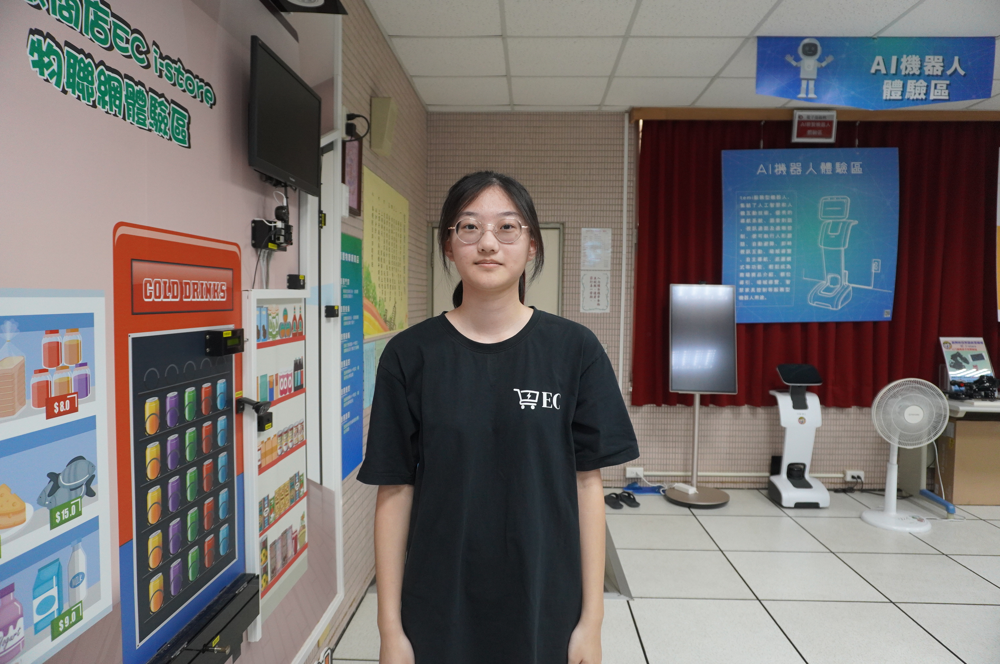

個人簡介
大家好，我是一個個性開朗、樂於學習，也願意接受挑戰的人。平常的我喜歡與人交流，和朋友相處時也常常擔任傾聽與協助的角色。我認為每個人都有自己的優點與特色，而我最大的特點就是做事認真、有責任感，只要是自己答應的事情，就會盡力完成。雖然我有時候會比較害羞，遇到不熟悉的人或環境時需要一些時間適應，但我會透過主動溝通與實際行動讓自己慢慢融入。我相信，個性並不是一成不變的，只要願意嘗試，就能在一次次的經驗中變得更加成熟。在學習方面，我對新的事物一直保持著好奇心。遇到不懂的問題時，我不會只想著逃避，而是會嘗試透過查資料、詢問老師或與同學討論來找到答案。我認為學習不只是為了考試或取得好成績，更重要的是培養解決問題的能力，以及面對困難時不輕易放棄的態度。除了課業之外，我也希望能夠培養自己的興趣與專長，從不同的活動中累積經驗。過程中即使有失敗或做得不夠好的地方，我也會把它當成一次學習的機會，找出自己的不足並加以改進。
對未來的我來說，我希望自己能成為一個有目標、有行動力，也能對他人有所幫助的人。我知道自己的能力還有許多可以進步的地方，因此我會保持謙虛的態度，不斷學習與充實自己。我也希望在未來的學習與生活中，可以勇敢嘗試不同的事物，累積更多寶貴的經驗，並找到真正適合自己的方向。我相信成功不一定是一次就能達成的，而是透過每天一點一滴的努力慢慢累積。期許未來的自己不害怕失敗，遇到困難時勇敢面對，並且一步一步朝自己的目標前進，成為一個更好的自己。